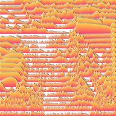

Contourstroken

Tekent gestapelde papierstroken waarvan de hoogte de helderheid of dekking van de laag volgt, als een landschap van bergkammen.
Instellingen
| Instelling | Type | Bereik | Standaard |
|---|---|---|---|
| Aantal | Getal | 0.5 tot 200 | 10 |
| Hoogte | Getal | 0 tot 15 | 1 |
| Hoek | Hoek | -3600° tot 3600° | 0° |
| Dikte | Getal | 0 tot 1 | 0.005 |
| Fase | Getal | -1000 tot 1000 | 0 |
| Omkeren | Aan of uit | – | Uit |
| Randkleur | Kleur | – | #223355 |
| Kleur 1 | Kleur | – | #FF9933 |
| Kleur 2 | Kleur | – | #AA3399 |
| Lichtkleur | Kleur | – | #FFFFFF |
| Lichthoek | Hoek | 0° tot 3600° | 0° |
| Hoogtekaart | Keuze | Alfa, Luminantie | Luminantie |
| Maskeren op laag | Aan of uit | – | Aan |
| Stijl | Keuze | Klassiek, Gestapeld | Klassiek |